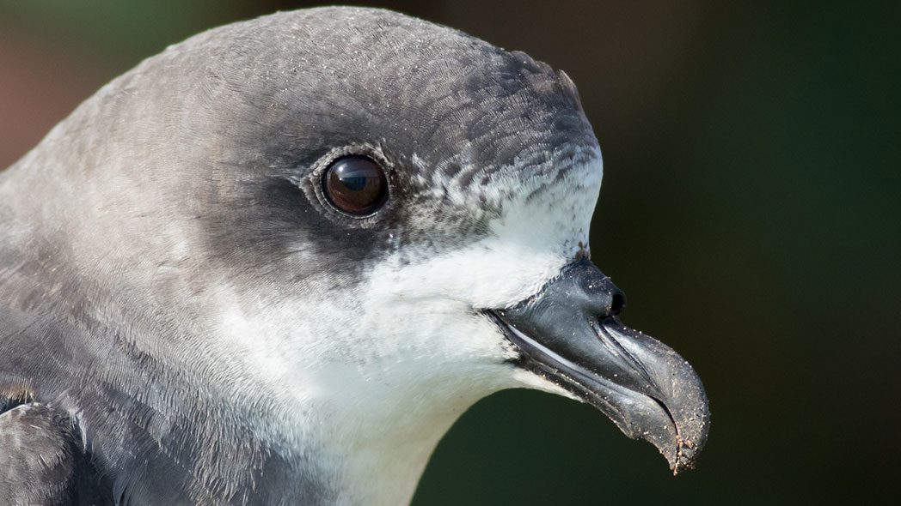

CONSERVATION EFFORTS
 CAHOWSCommonly referred to as the Cahow, the Bermuda petrel is Bermuda's National Bird. It is a pelagic seabird, which means it spends most of its life out on the open ocean. They feed on small squid, fish and shrimp.
The Cahow was believed to be extinct for nearly 300 years until several were found in 1951. Since that time, dedicated conservationists have worked to bring this species back from the brink of extinction.
THE CAHOW RECOVERY PROJECTThe Cahow Recovery Project is a long-term management, research and recovery programme aimed at reducing threats to the National Bird of Bermuda, the Cahow or Bermuda petrel (Pterodroma cahow). It also aims to promote the recovery of this endemic species, which is now one of the rarest seabirds on Earth and is completely unique to the island.
The Cahow, once thought to have numbered more than half a million birds, was catastrophically affected by the arrival of humans on the island in the early 1600s and by introduced mammal predators such as rats, cats, dogs and pigs. In less than 20 years of settlement, the Cahow declined to the point where it was thought extinct, a belief that persisted until the rediscovery of 18 remaining nesting pairs on four tiny offshore islets.
Since 1960, a conservation and recovery programme has been in place that has addressed and controlled most threats, resulting in an accelerating increase in the population. This has increased from 18 pairs producing 8 fledged chicks annually in the 1960s to a record total of 92 pairs producing 52 successfully fledged chicks in the 2010 nesting season. New techniques and technology have enabled this programme to record a number of recent achievements over the last year, which include the following:
A new nesting colony of Cahows has been successfully established on Nonsuch Island Nature Reserve, by the techniques of Translocation of near-fledged chicks from the small nesting islets, to the much larger and more protected Nonsuch, and by use of a sound attraction system.
Archival geolocational data loggers were attached to the legs of 12 nesting Cahows; 9 of these were recovered and the data downloaded, revealing the tracks taken by the birds when at sea for up to 12 months. For the first time, it was revealed that Cahows fly thousands of miles to Mid-Atlantic or Canadian waters near Newfoundland and Nova Scotia to get food for their chicks in Bermuda. The loggers also revealed that Cahows spend up to 5 months in waters around the Azores Islands or as far northeast as western European waters, travelling an amazing total of up to 80,000 miles in 12 months.
A programme to attach identification bands to the legs of adult and fledgling Cahows has resulted in almost three-quarters of the entire population being banded by 2010. This enables individual birds to be identified and followed for the rest of their breeding lifespan, and has been used to determine survival rates, breeding success and other aspects of breeding biology.
The Cahow Recovery Programme is now recognized as one of the most successful restoration projects known for a critically endangered species, and was highlighted in the first World Seabird Conference in Victoria, British Columbia, in September, 2010. Future plans include the establishment of additional safer nesting colonies, and additional tracking of the birds to determine their oceanic range and feeding areas.